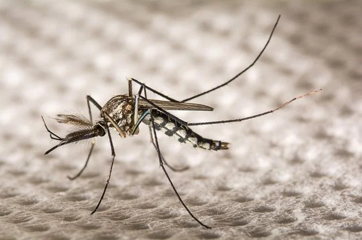
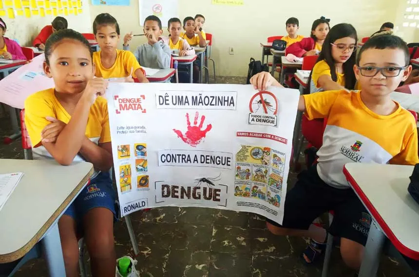
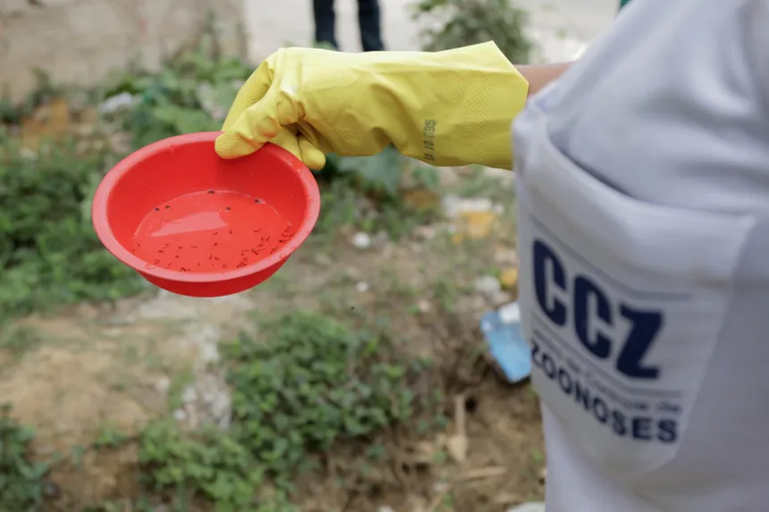
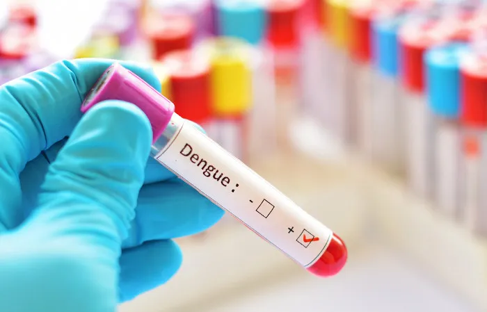

1. Compreendendo a Dengue:
A dengue é uma doença viral transmitida pelo mosquito Aedes aegypti. Compreender os detalhes dessa doença é essencial para a prevenção e o controle eficazes. Explore a natureza da dengue, seus sintomas característicos, os métodos de transmissão e as possíveis complicações associadas. Aprofunde-se na importância de reconhecer os sinais da doença e buscar tratamento adequado.

2. Estratégias de Prevenção da Dengue:
Descubra estratégias abrangentes e eficazes para prevenir a propagação da dengue em sua comunidade. Desde a eliminação de criadouros do mosquito até a implementação de medidas de proteção pessoal, existem diversas formas de reduzir o risco de infecção. Explore como você pode contribuir para tornar seu ambiente mais seguro e proteger a saúde de sua família e vizinhos.
3. Diagnóstico e Tratamento da Dengue:
Saiba como é feito o diagnóstico da dengue e quais são as opções de tratamento disponíveis. O diagnóstico precoce é fundamental para iniciar o tratamento adequado e evitar complicações graves. Conheça os sintomas que indicam a necessidade de procurar assistência médica e saiba como gerenciar os sintomas em casa enquanto aguarda orientação profissional.

4. Impacto Social e Econômico da Dengue:
Explore o impacto abrangente da dengue na sociedade e na economia. Além dos custos diretos de tratamento médico, a dengue também pode afetar a produtividade no trabalho, sobrecarregar os serviços de saúde e prejudicar o desenvolvimento econômico de comunidades afetadas. Compreenda os desafios sociais e econômicos associados à dengue e a importância de investir em medidas preventivas.

5. Engajamento Comunitário na Prevenção da Dengue:
Participe ativamente de esforços comunitários para combater a dengue. Engaje-se em campanhas de conscientização, mutirões de limpeza e outras iniciativas locais para reduzir a proliferação do mosquito e promover um ambiente mais saudável. Ao trabalhar em conjunto com sua comunidade, você pode fazer uma grande diferença na prevenção da dengue e na proteção da saúde pública.

6. Pesquisa e Inovação no Combate à Dengue:
Explore as últimas pesquisas e inovações no campo da prevenção e controle da dengue. Descubra novas tecnologias, métodos de controle de mosquitos e abordagens terapêuticas que estão sendo desenvolvidas para combater a doença. Entenda como a ciência está contribuindo para a melhoria das estratégias de prevenção, diagnóstico e tratamento da dengue, e como você pode se envolver nesse processo de inovação para enfrentar esse desafio de saúde global.